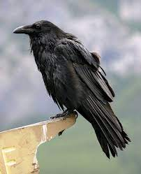

Corvo
Corvus

Corvos são extremamente inteligentes, sendo capazes de lembrar rostos.
Eles são conhecidos por usar o tráfego para ajudar a quebrar nozes,
já foram observados jogando suas nozes em cruzamentos movimentados,
esperando que os carros passassem por cima delas e as abrissem.